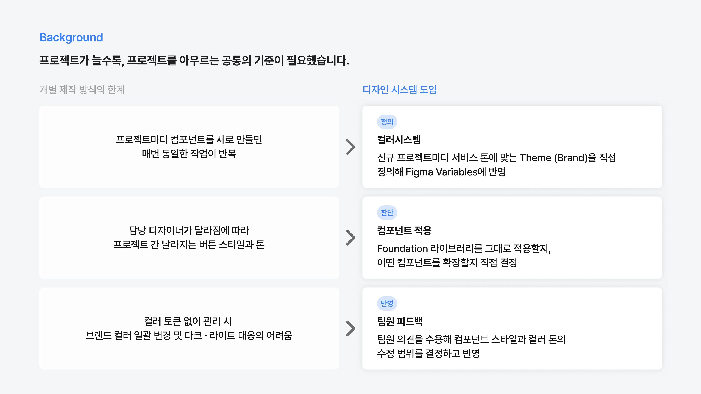
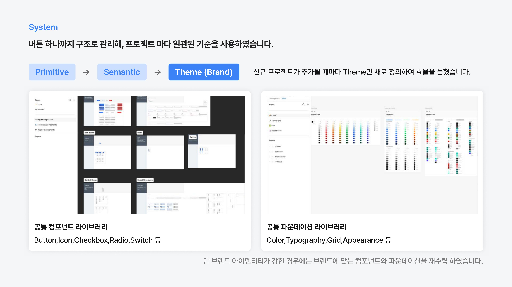

Cross-project Design System
Design System
20개 이상의 외주 프로젝트에서 반복되던 컴포넌트 제작을 Primitive · Semantic · Theme 3단 구조로 표준화해, 신규 프로젝트마다 Theme만 새로 정의하면 되도록 만들었습니다.
01
Background
프로젝트가 늘어날수록 프로젝트마다 컴포넌트를 새로 만드는 반복 작업, 담당 디자이너에 따라 달라지는 버튼 스타일과 톤, 컬러 토큰 없이 관리할 때 발생하는 브랜드 컬러 일괄 변경의 어려움이 쌓였습니다.

02
System
Primitive → Semantic → Theme(Brand) 3단 구조로 버튼 하나까지 관리해, 신규 프로젝트가 추가될 때마다 Theme만 새로 정의하면 되도록 만들었습니다. Button · Icon · Checkbox · Radio · Switch 등 공통 컴포넌트 라이브러리와 Color · Typography · Grid · Appearance 등 공통 파운데이션 라이브러리를 나눠 관리하고, 브랜드 아이덴티티가 강한 프로젝트는 별도로 컴포넌트와 파운데이션을 재수립했습니다.

03
Outcome
여러 프로젝트를 아우르는 시스템적 사고와 팀원 피드백을 반영해 시스템을 지속적으로 발전시키는 경험을 쌓았습니다.
20+
프로젝트에 적용 — 공통 Foundation과 Component를 구축해 20개 이상의 프로젝트에 적용
30%
이상 단축 — 반복적인 컴포넌트 제작과 스타일 정의를 줄여 신규 화면 제작 시간 단축
UI 일관성
Theme (Brand) 기반으로 프로젝트 간 일관성을 통합 관리